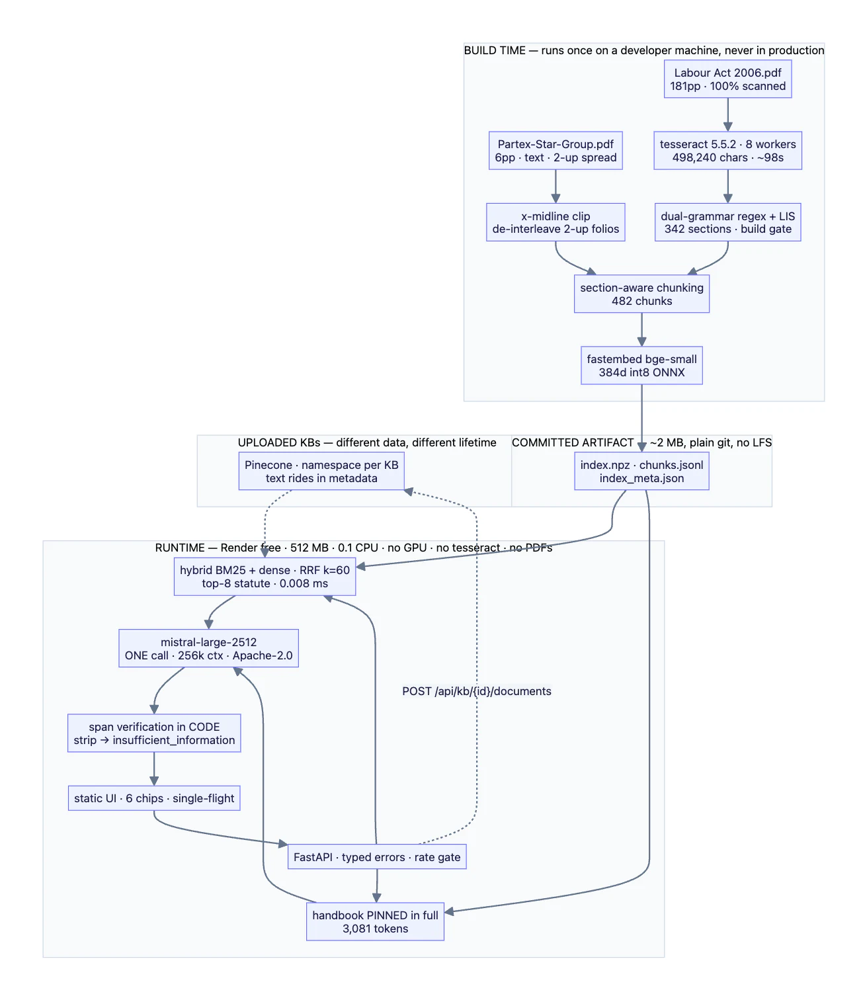

Enterprise AI Document Assistant
Enterprise AI Document Assistant: an AI tool that answers HR policy questions with a source page and exact quote, checks company policy against Bangladesh labour law, and says "not found" instead of guessing. Never made up an answer across 30 tests.

Verify the citation
Scroll to watch it unfold. Each beat is one documented step of the project.
- 01
Retrieve passages
Hybrid keyword (BM25) and dense search pull the most relevant passages.
- 02
Quote check
The answer is only kept if a quote on the page supports it.
- 03
Answer with source
It shows the document, the page and the exact quote.
- 04
Outcome
The answer comes with the document, page and quote it rests on.
- 05
Plausible but unsupported
It says it does not know rather than stretch a nearby paragraph.
- 06
Policy vs law
It flags the gap between the policy and the law.
An illustration of how the system works, drawn from the write-up below. It is not recorded output.
What it does
Ask a question about company HR policy in plain English, and get a short answer that shows its work: which document it came from, the page number, and the exact sentence. If the answer isn't in the documents, it says so instead of guessing. It runs on a free server with no GPU, and most of the decisions below follow from taking that limit seriously.
- Answers HR policy questions in plain English
- Shows the document, the page and the exact quote behind every answer
- Says "not found" rather than guessing
- Compares company policy against the law and flags where they disagree
- Open demo with no sign-in, plus a private mode for your own PDFs
Two ways to use it
The live link opens straight into a working demo with no sign-in, because a demo behind a login form is a demo nobody tries. A second mode lets you log in, upload your own PDF — including scanned ones, which get converted to text automatically — and ask questions about it. Only the upload side needs a login, since that's the part that costs money and stores data.
- Demo — open to anyone, no sign-in needed
- My documents — log in, upload any PDF, ask questions about it
- Uploads can be saved permanently, and the app tells you up front when they won't be
- Uploading the same file twice never creates a duplicate
The problem that made it interesting
I was given two documents: a company employee handbook, and the Bangladesh Labour Act — the actual law. The handbook opens by claiming its policies "are in compliance with the applicable labor laws of Bangladesh", and the other 181 pages are the law that claim refers to. So these aren't just two reference documents: they're a claim, and the evidence to test it. That turns a search box into something more useful — an assistant that checks whether the company's policy actually matches the law. It found real gaps:
- Casual and sick leave — exactly at the legal minimum
- Annual leave — better than the law requires
- Maternity leave — missing from the handbook; the law requires 16 weeks
- Festival holidays — missing; the law requires 11 paid days
- Overtime pay — missing; the law requires double the normal rate
- The handbook withholds leave until probation ends; the law says "every worker"
Every answer has to prove itself
The AI never writes a citation. It points at a passage, and the code builds the quote, the document name and the page number from that passage. So a made-up source isn't just unlikely here — it's impossible by design.
- The quote is copied from the source by code, never written by the AI
- Page numbers match the printed page, not the PDF's internal numbering
- Document names come from a curated list, never from filenames
The hardest part: teaching it to say "I don't know"
The obvious approach is to answer when the model is confident and refuse when it isn't. On these documents that is measurably backwards. A trick question — "how many days of paternity leave?" — scores higher confidence (0.41) than two real, answerable questions (0.18 and 0.22), because it looks so much like the casual-leave section. Any cutoff that blocks the trick question also blocks real ones. That isn't bad luck: a good trick question is plausible, and plausible means it resembles the real thing. So confidence is the wrong signal, and refusing is handled in code instead:
- The whole handbook stays in view, so "it isn't in there" is a fact rather than a guess
- Every claim must point at a real passage
- The code checks the quote actually appears in that passage — if it doesn't, the claim is thrown out
- If nothing survives, the app reports "not found" — the model doesn't get to make that call
- A refusal is a normal, successful response, not an error
How it's built, and why it runs for free
All the expensive work happens once, before anything ships. On my own machine, the 181-page scanned law is converted to text (about half a million characters, in roughly a minute and a half), split into its 342 sections, and turned into a small 2 MB search index that ships with the code. The live server just loads that file and answers questions — it never opens a PDF or runs text recognition. That split is the whole reason it survives a free 512 MB server with no GPU: doing the heavy work while a user waits would hit the time limit and the memory limit at once. It also had to survive a mid-project move — Hugging Face now charges for the kind of hosting this needs, which I confirmed against their API rather than their docs — and that cut the available memory from 16 GB to 512 MB, making every size decision real.
The results, including the unflattering ones
I wrote 30 test questions and ran them against the live system. It has never once made up an answer or answered something it should have refused, and it correctly refused all six trick questions. But it also refuses real questions about a third of the time — it is too cautious. That's a deliberate trade: for a compliance tool, no answer is safer than a wrong one. The cause is traceable — the source is scanned text containing real typos, and the model quietly tidies them up when quoting, so the quote no longer matches the source and gets thrown out. Allowing small spelling drift while still requiring numbers to match exactly cut the over-refusals from 57% to 36%. The answers are graded by a different company's model (Google's Gemini), because a model grading its own family's work marks it too kindly.
Decisions, and why I made them
Every one of these was a real option I looked at and turned down for a reason I could measure.
- Why search at all, when both documents fit in one prompt? They do fit. But then page numbers get invented. Pulling out passages means each one already knows its own page, so the citation is correct by construction
- No vector database. The search index is under 1 MB and a lookup takes 8 millionths of a second. Adding a database to serve that would be overkill
- No AI "agent". I went looking for a question that genuinely needed multi-step reasoning, couldn't find one, and so didn't build the loop
- No fine-tuning. I can train a model; I can't serve one for free without a GPU — and it would need retraining for every new document
- No reranker. It already finds the right passage, and here a reranker would promote the company's copy of a law alongside the law itself — exactly the two things that most need telling apart
What it doesn't do
Stated up front rather than discovered later.
- The law is the 2006 Act as published in 2009 and amended since, so every answer names that limit. This supports human HR review — it is not legal advice
- "Not in the law" honestly means "not in the part I searched"
- Uploaded documents get simpler handling than the two built-in ones, so their answers cite a page but not a section
- The free server sleeps after 15 minutes idle and takes about a minute to wake up
- 30 test questions is a small sample, so the numbers carry real uncertainty (±11 points)
By the numbers
Schematic & figures

Tech stack & key skills
Core tools, methods and skills demonstrated in this project: